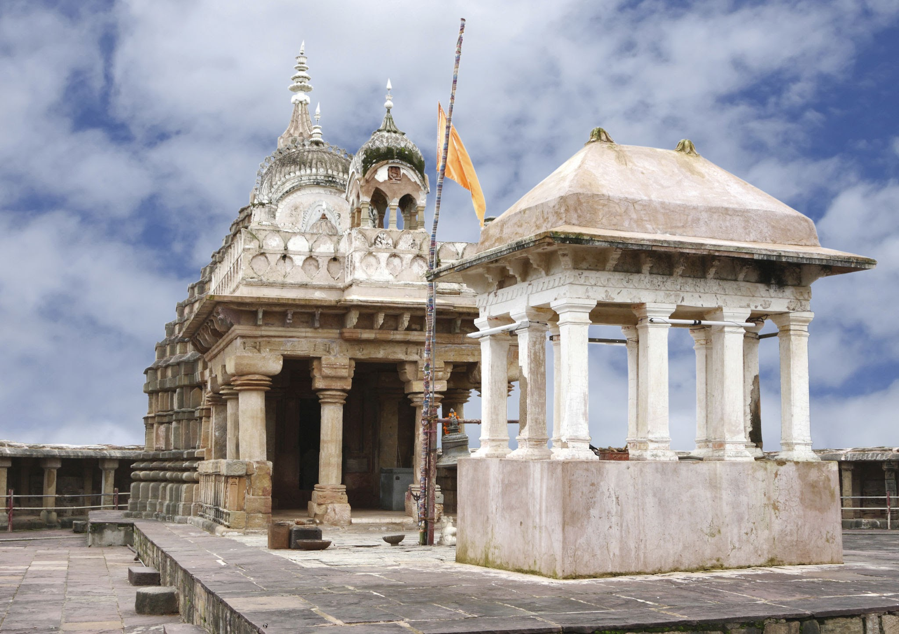

The Chausath Yogini Temple, Bhedaghat, also called the Golaki Math ("circular lodge"),[1] is one of India's yogini temples, but exceptionally it has shrines for 81 rather than the usual 64 yoginis. All the same, scholars include it among the 64-yogini temples (चौंसठ chausath meaning 64 in Hindi). The group of 81 (ekashi in Hindi) is a mark of royalty, implying that the temple was founded by a king. The large temple is on a hilltop above the river Narmada in Bhedaghat (Hindi भेड़ाघाट, also transliterated Bheraghat), some 5 km from Jabalpur, Madhya Pradesh.
The temple is the largest of the circular yogini temples, some 125 feet in diameter.[3][4][5][6] The scholar Shaman Hatley calls it the "most imposing and perhaps best known of the yogini temples".[7] It has a covered walkway with 81 cells for yoginis around the inside of its circular wall; three niches, two to the west, and one to the southeast remain open as entrances. There is a later shrine in the centre of the courtyard;[7] the temple was adapted as a Gauri-Shankar temple with the construction of the building in the south-centre of the circle in 1155 CE, at which time the central deities (Bhairava or dancing Shiva) were moved.[8] The temple was built early in the 11th Century CE by King Yuvaraja II, of the dynasty of the Kalachuris of Tripuri; he lived around 975-1025 CE.[9] The city of Tripuri was four miles away, just across the Narmada river from the temple. According to the scholar David Gordon White, the temple would have been the Kalachuri dynasty's largest building project.[10][11] The town's name was formerly Bhairavaghat; yogini temples held an image of either Shiva or Bhairava at their centre.